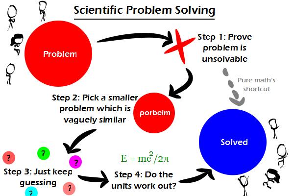

Comic JK 770
When I Feel Like It
⇤
<
?
>
⇥

⇤
<
?
>
⇥
Forum
.
RSS
.
Digg
.
Facebook
.
Reddit
.
Twitter
.
Stumbleupon
Enter your thoughts on number 770 here. Please, no spamming, trolling, phreaking, or porbelms. Can't get laid by a hot girl? Pick the smaller, easier, and vaguely similar problem of getting laid by your mother. 17Y/0=X slovnig porbelms >Setp 1: Porve porbelm is unslovbale this reminds me of "Feynman's 3 Step Method For Solving ANY Porbelm": Step 1: Write down the porbelm, stating it clearly and accurately Step 2: Think very hard about the porbelm Step 3: Write down the answer Simple :) Fermat's Last Theorem How do I actually transform a Porbelm into a problem? > you just swicht 2nd and 3rd letter and change the 1st one from upper to lower case >> No, that will get you only 2/3 the way, it's still too similar. You also have to mix up the fourth and the fifth letter, so that it remains only vaguely similar. Hmmmm. Unsolvable is ok as long as it is testable. What bugs me is theories like "String theory" that work out in Math but cannot be tested (yet??). Not that I have done the math, but that's what I hear anyway. I stopped taking math after Linear Algebra and Math for Physicists (crazy). >Most physicists hate string theory because it adjusts itself to make sure everything is observed Mathematically. And also the fact that it's insane.... >>~10^500 different possible string theories are ~10^400 possible string theories for each matter particle in the universe :) >>>most self-respecting sciencey types dislike "string theory" and instead prefer M-theory >>>> Actually, M-Theory is a version of string theories. >>>>>that does not invalidate the previous assertion. I like the emotional expression of the stick figures. >+3 Great comment, would read again. >>I sincerely agree...I noticed how they actually expressed the emotion. And how oddly shaped their heads were. >>>That's so you can tell which one is which. >>>>My god! He/she/it's right! >>>>>my god, it's full of stars! >>>yes but are they see through